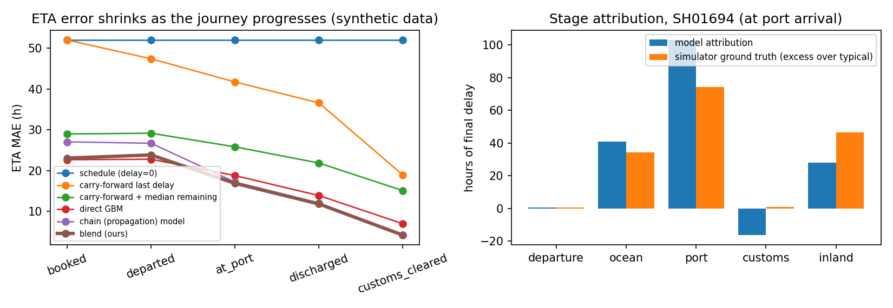

Aiqon AI internship take-home. Secondary tables, ablations and investigations are in report/appendix.md; every number here is copied from a file generated by the code.
Delay = actual − scheduled time at a milestone (hours). ETA = scheduled delivery + predicted final delay. A shipment is badly delayed if the final delay exceeds 48 h. Milestones: departure, port arrival, discharge, customs clearance, delivery. Predictions are made at five checkpoints (booked, departed, at port, discharged, customs cleared), each using only information available at that moment.
No public dataset records scheduled and actual times for every stage of a shipment, so the main experiments use a causal simulator written for this project: 2,000 shipments on ten India→Gulf / Singapore / Europe / US routes. Delay propagates as dk = mk·dk−1 + ownk: part of the upstream delay is absorbed by slack and new delay is added at each stage. The simulator includes congestion × terminal inefficiency, missed berth windows, customs office hours, inspections, dispatch cut-offs and missing timestamps. Only the wind data is real (ERA5); every other parameter is an assumption. Because each delay hour's cause is logged, the final delay decomposes exactly by stage, which gives ground truth for scoring explanations.
Train on the earliest 60% of shipments, calibrate on 15%, test on the latest 25% (500 shipments). ETA mean absolute error in hours:
| Method | Booked | Departed | At port | Discharged | Customs cleared | Overall |
|---|---|---|---|---|---|---|
| Schedule as ETA | 52.0 | 52.0 | 52.0 | 52.0 | 52.0 | 52.0 |
| Best baseline (last delay + median remaining) | 29.0 | 29.2 | 25.8 | 21.9 | 15.1 | 24.2 |
| Direct model | 22.7 | 22.8 | 18.8 | 13.9 | 7.0 | 17.0 |
| Chain model | 27.1 | 26.7 | 17.2 | 12.1 | 4.3 | 17.5 |
| Blend (this system) | 23.1 | 23.8 | 16.9 | 11.8 | 4.2 | 16.0 |

Figure 1 (synthetic data). Left: ETA error at each checkpoint. Right: hours of delay attributed to each stage for one held-out shipment, against the simulator's ground truth.
Port-arrival ETA. One stage could be tested on real data: 24 days of Danish Maritime Authority open AIS, where vessels broadcast their declared destination and ETA. Rows are vessel-hour states chosen using only information known at that hour, including vessels that never arrive; the split is by time. About 30,000 rows, 27 ports. Error in hours on the latest 20%:
| Arrival radius | Declared ETA | Per-port median correction | Learned model | Model vs declared (95% CI) | Model vs median correction (95% CI) |
|---|---|---|---|---|---|
| 5 km | 11.46 | 7.97 | 7.41 | +2.75 to +5.41 | −0.96 to +2.14 |
| 10 km | 7.27 | 6.50 | 5.59 | +1.11 to +2.25 | +0.45 to +1.37 |
| 15 km | 5.97 | 5.32 | 4.26 | +1.28 to +2.17 | +0.76 to +1.41 |
The gain is real but modest and depends on how arrival is defined. Against a trivial per-port correction the model wins by at most about an hour, and at 5 km it is not distinguishable. Declared ETAs are already good in the typical case (median error about 1.5 h); the error comes from stale ETAs and no-shows. An earlier design that kept only vessels which did arrive showed a far larger gain and was retracted: its error scaled with the look-back window, a sign that the selection leaked the outcome.
Do the simulator's mechanisms hold? Using 1,639 real port stays, I tested four mechanisms written into the simulator (direction and rough size only; levels are not comparable):
| Mechanism | Real data | Simulator | Verdict |
|---|---|---|---|
| Congestion lengthens the port stage | correlation −0.03 (CI −0.08 to +0.03) | +0.55 | Not detected |
| Port-stage duration is heavy-tailed | mean / median 1.71 | 1.22 | Supported; real tail heavier |
| Longer stays when starting Fri–Sun | 1.07× (CI 0.96–1.18) | at customs only | Not detected |
| Arrival lateness has a late tail | 11% over 6 h late, 3% over 6 h early | 62% over 6 h late | Supported |
The congestion proxy is crude and these ports are rarely full, so this does not prove congestion is irrelevant. It does mean the simulator's strongest assumption is not externally validated, and that part of the model's skill on synthetic data is the recovery of rules I wrote.
pip install -r requirements.txt (pinned, Python 3.13), then python scripts/run_all.py (about one minute) and python -m pytest tests realworld -q (24 tests). Runs are deterministic. Real-data steps and the audit log are in realworld/README.md and report/appendix.md.